RAŠTO DARBO RENGIMAS
Priedų numeravimas
1 žingsnis iš 23
Pasirenkame priedą, kurį norime sunumeruoti. Šiuo atveju – lentelę
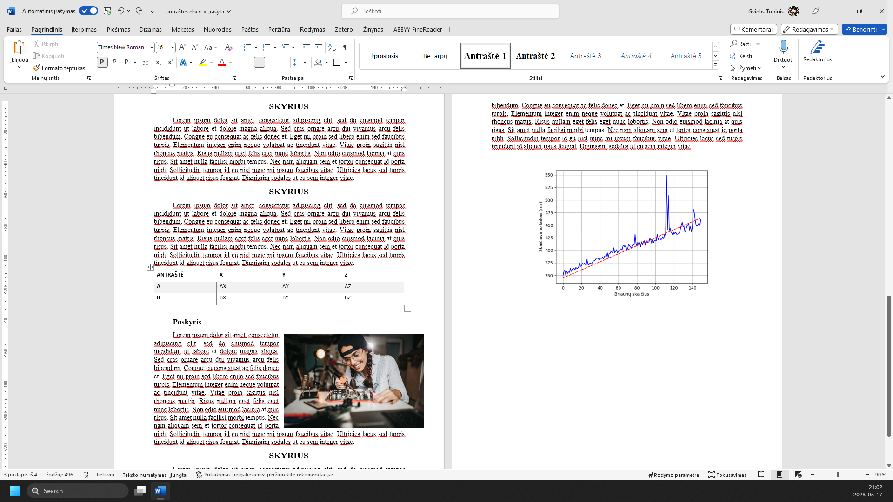
Atidarome meniu ‘Nuorodos’
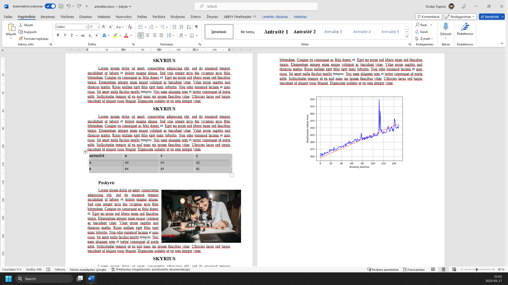
Įrankių juostoje pasirenkame ‘Įterpti antraštę...’
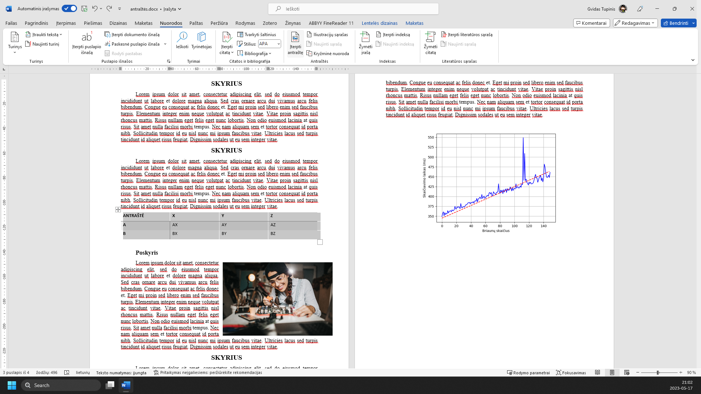
Nustatome, kad žymėsime lenteles, pasirinkdami meniu ‘Žyma:’
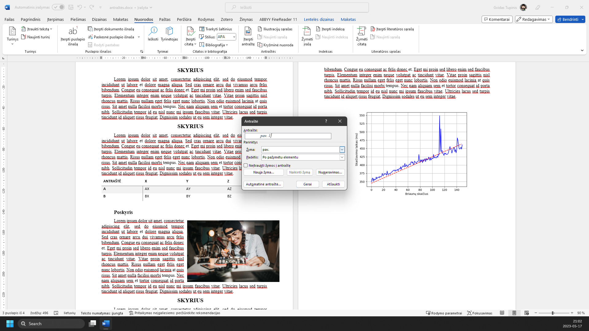
Ir pasirinkdami ‘lentelė’
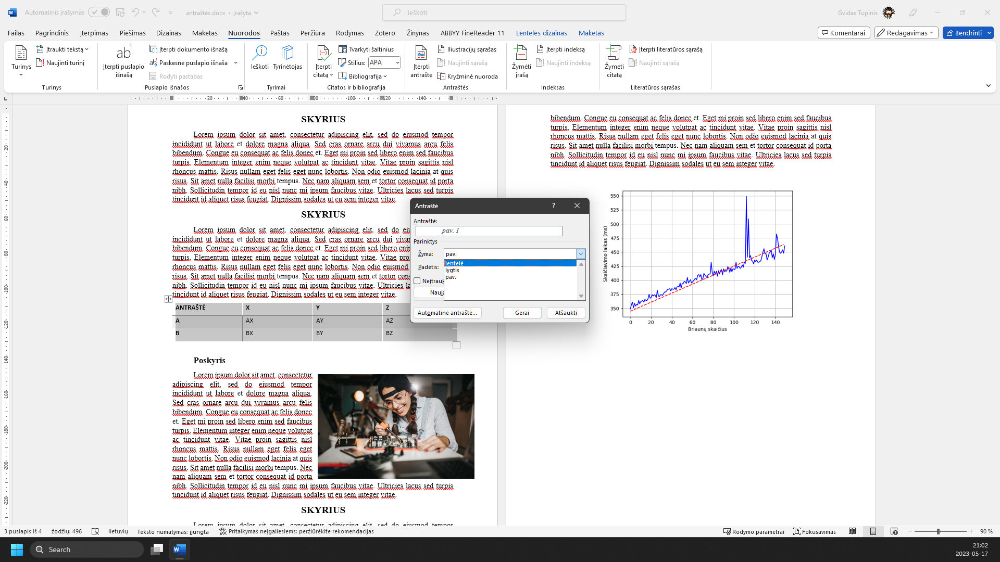
Laukelyje ‘Antraštė:’ galime pridėti lentelės aprašymą
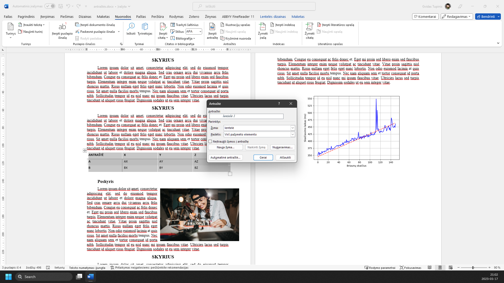
Įsitikinę, kad antraštės padėtis yra virš pažymėto elemento, spaudžiame mygtuką ‘Gerai’
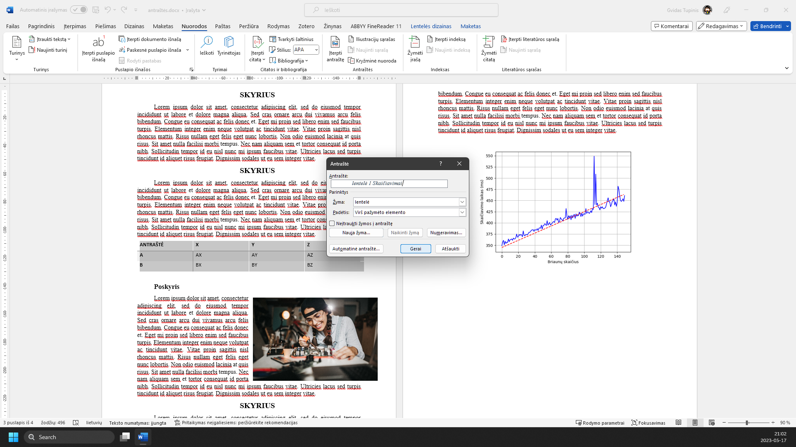
Pasirenkame kito tipo priedą, pvz., iliustraciją
Spaudžiame ‘Įterpti antraštę...’
Pasirenkame, jog tai yra paveikslėlis (arba pavyzdys)
Spaudžiame ‘pav.’
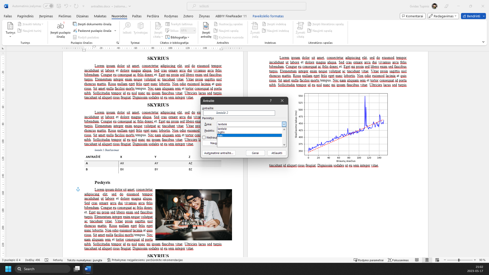
Pridedame aprašymą
Įsitikinę, kad antraštės padėtis yra po pažymėtu elementu, spaudžiame mygtuką ‘Gerai’
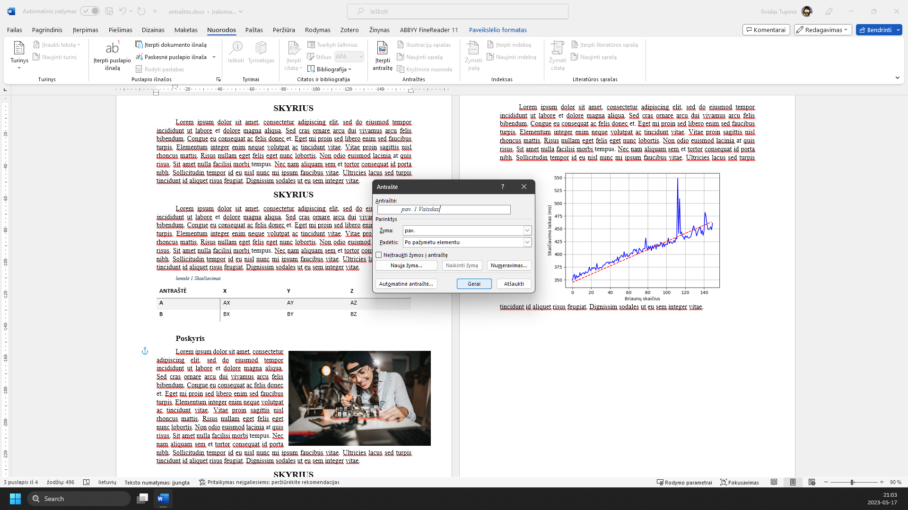
Dar kartą atliekame tuos pačius veiksmus su kita iliustracija
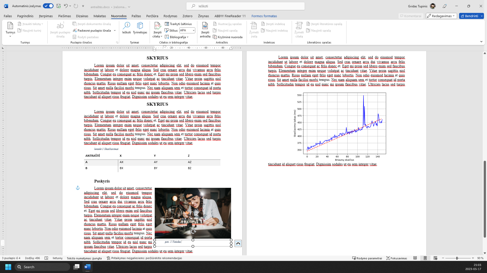
Atlik veiksmą ekrano nuotraukoje pažymėtoje vietoje.
Atlik veiksmą ekrano nuotraukoje pažymėtoje vietoje.
Atlik veiksmą ekrano nuotraukoje pažymėtoje vietoje.
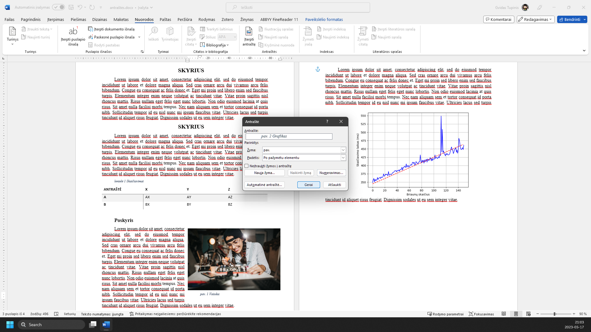
Kaip galima pastebėti, iliustracijos yra numeruojamos automatiškai pagal tai, kuri yra sutinkama dokumente pirmoji
Tarp šių iliustracijų atsiradus dar vienai, taip pat galime ją sunumeruoti
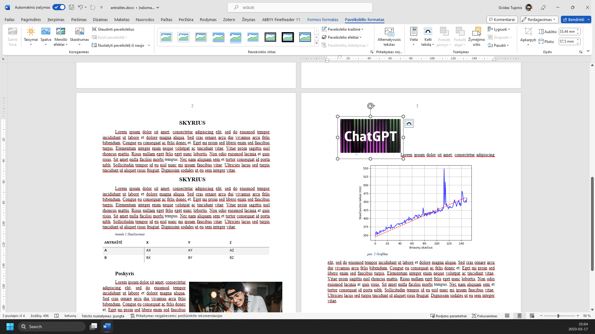
Atlik veiksmą ekrano nuotraukoje pažymėtoje vietoje.
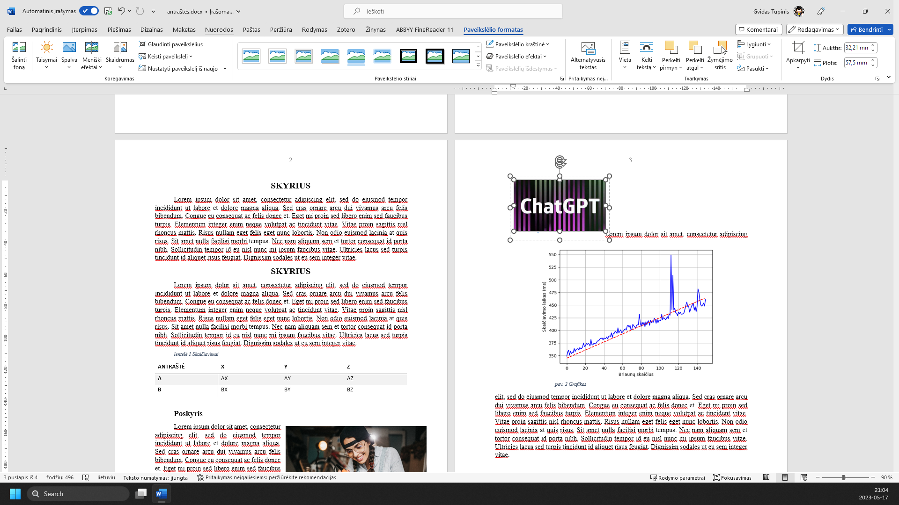
Atlik veiksmą ekrano nuotraukoje pažymėtoje vietoje.
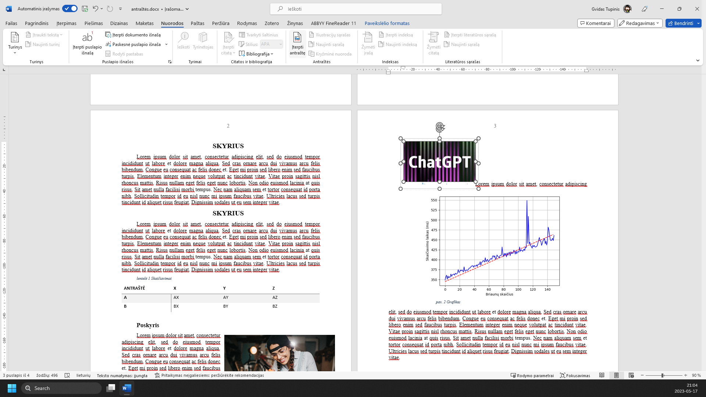
Atlik veiksmą ekrano nuotraukoje pažymėtoje vietoje.
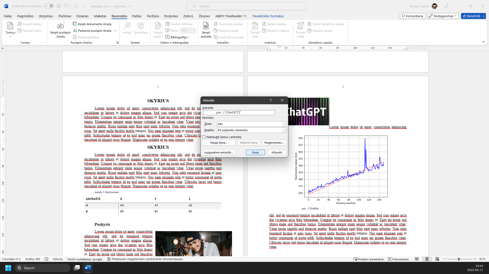
Kaip matome, numeravimas pasikeitė automatiškai
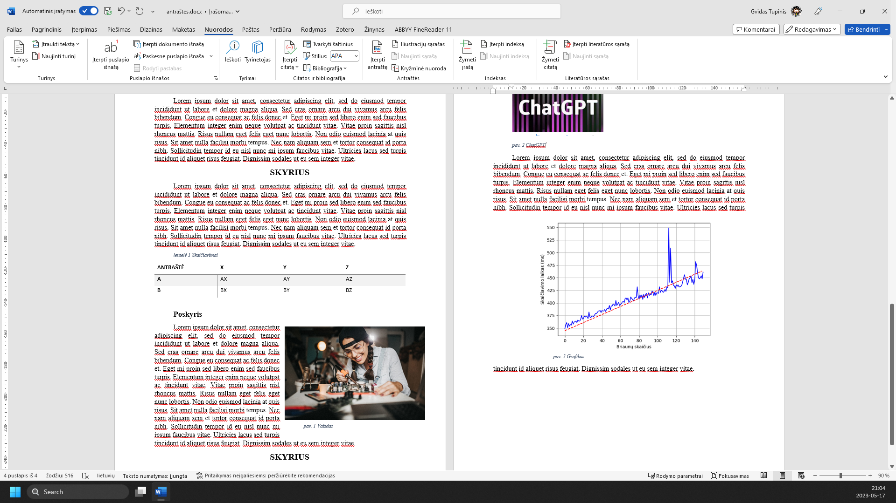
Žaliai apibrėžta vieta rodo, kur paspausti. Vaizdą gali padidinti naršyklės mastelio valdikliu. Žingsnius taip pat keičia klaviatūros rodyklės.